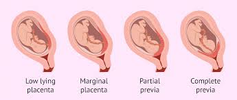
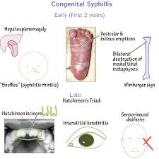
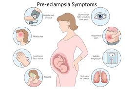
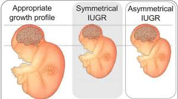
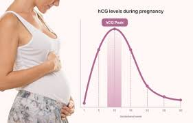
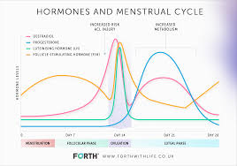

Decoding the Placenta
to Save Mothers & Babies
High-resolution genomics, AI-driven diagnostics, and community-embedded trials — redefining maternal-fetal medicine across Africa.
Peer-reviewed papers
in high-impact journalsLives directly impacted
mothers & newbornsActive clinical sites
across KenyaWellcome funding
2026–2031Our Research Frontiers
Integrating molecular discovery, engineering, and clinical translation to eliminate preventable placental diseases.

Malaria & Genomic Surveillance
Long-read sequencing & phylogeography to track artemisinin resistance, pfhrp2/3 deletions, and transmission networks in real time.

Placental Malaria & Maternal Health
Single‑cell atlas of infected placentas reveals novel immune checkpoints & biomarkers for preterm birth and low birthweight.
Point‑of‑Care Diagnostics
Lab‑on‑a‑chip, smartphone‑based malaria & syphilis tests with 98% sensitivity, designed for rural clinics and low-literacy users.

Clinical Trials & Implementation
Cluster‑randomized trials evaluating diagnostic impact, health economic analyses, and scale‑up strategies for national adoption.
Recent Breakthroughs
Discoveries that are rewriting placental medicine
First single‑cell atlas of malaria‑infected placenta
Identified new macrophage subset driving adverse outcomes — published in Nature Medicine.
CRISPR-based congenital syphilis test
Field‑validated in 12 clinics; 15‑minute results with mobile reporting.
Wellcome Discovery Award
£4.2M to establish Africa’s first placenta research centre at MKU.
The Scientific Canvas
Scientific essentials based on clinical data from the Cleveland Clinic
Vital Functions
A temporary organ serving as the fetus’s lungs, kidneys, and liver. It provides oxygen/nutrients, removes waste, and transfers immunity.
- 🧬 Nutrient Transfer
- 🛡️ Immune Jumpstart
- 🌡️ Hormone Production
Complex Anatomy
A disc-shaped organ (~9 inches) containing 40+ villi structures that "bathe" in maternal blood to support uninterrupted fetal growth.
- 🌳 Villi "Tree" Network
- 🩸 Disc Architecture
- 🍼 Placental Cavity
Clinical Watch
Early identification of abnormalities like Previa, Accreta, or Abruption is critical for maternal and newborn survival.
- 🩺 Placenta Accreta
- 🚨 Placental Abruption
- 🤰 Placental Insufficiency
Essential Clinical Search Indices
Visual guides to common placental conditions and diagnostic biological markers

Placenta Previa
When the placenta covers the cervix, potentially causing severe bleeding. Essential terminology for prenatal surgical planning.

Congenital Syphilis
An infection passed from mother to fetus. Our CRISPR-POC research focuses on rapid, 20-minute field detection to prevent transmission.

Preeclampsia
High blood pressure related to placental blood supply issues. A leading cause of maternal morbidity in Sub-Saharan Africa.
Gestational Diabetes
Placental hormones can cause insulin resistance. We study the metabolic pathways between placental health and blood sugar levels.
Vaginal Bleeding Alerts
The primary clinical sign of placental abruption or disorder. Knowledge of these alerts is vital for early community intervention.

Intrauterine Growth Restriction
Delayed fetal growth due to placental insufficiency. Our genomic research maps the immune dysfunction driving this condition.

HCG Hormones
The first signal of pregnancy from the placenta. Maintaining high HCG is vital for supporting early fetal development and hormones.

Progesterone Levels
Placental progesterone maintains the uterine lining. Any drops can trigger preterm birth — a core focus of our clinical surveillance.
Global Collaborators
Working together to accelerate impact
Shape the future of maternal health
Join our network of researchers, clinicians, and innovators.